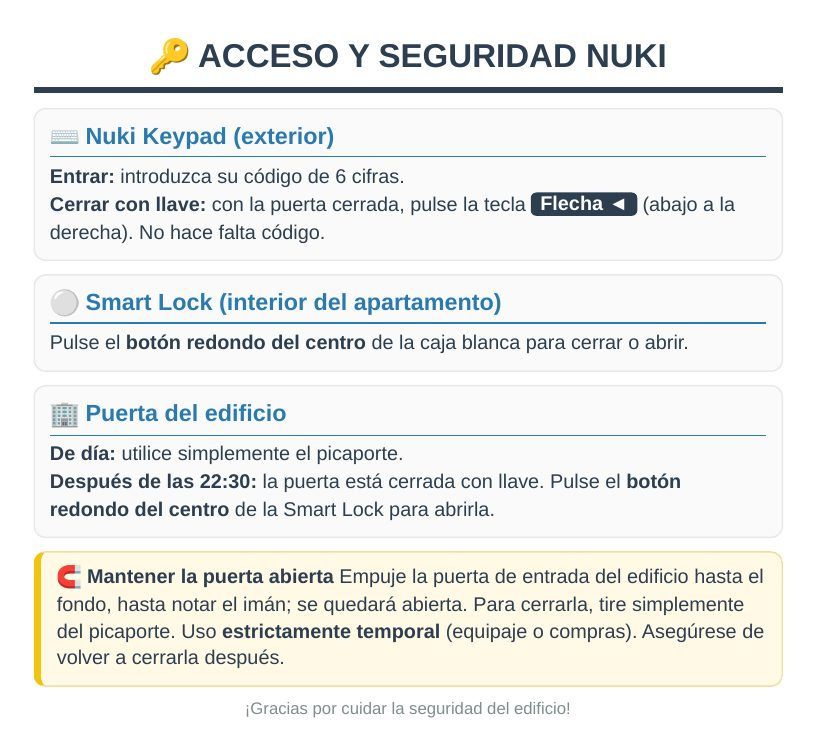
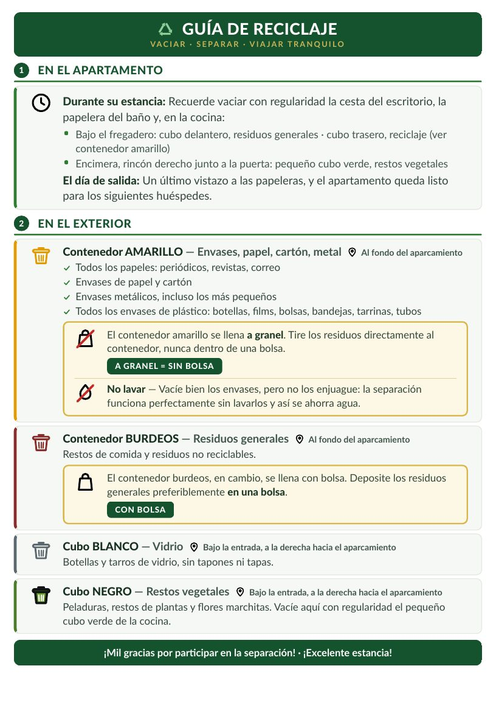

- 1Aparque en la plaza de aparcamiento privada, justo al lado de la casa.
- 2Diríjase a la puerta de entrada del apartamento, en la planta baja.
- 3Introduzca su código personal en la cerradura inteligente Nuki y pulse la tecla de confirmación. Recibirá el código la víspera de su llegada.
- 4La puerta se desbloquea. ¡Bienvenidos!

- 1Su código se desactiva automáticamente a las 11:00. ¿Necesita un poco más de tiempo? Avíseme con antelación y ajustaré la hora encantado.
- 2Si ha utilizado el lavavajillas, póngalo en marcha con los últimos platos: yo me encargo de vaciarlo.
- 3Deje las sábanas en las camas, no hace falta quitarlas. Deposite las toallas y los paños de cocina usados en el cesto previsto para ello.
- 4Separe los residuos según las indicaciones expuestas en la cocina.
- 5Si ha utilizado el portón, vuelva a dejar el mando a distancia en el cuenco negro de la consola de la entrada.
- 6Compruebe que las ventanas estén cerradas.
- 7Basta con cerrar la puerta al salir: se bloquea automáticamente.
Muy alta velocidad en todo el apartamento: teletrabajo, videoconferencias y streaming en 4K.
- Salón: sofá rinconera, Smart TV, mesa redonda para cuatro.
- Cocina: equipada, abierta a un balcón soleado con muebles de jardín.
- Dormitorio 1: cama queen size 160 × 200, escritorio.
- Dormitorio 2: dos camas individuales 90 × 200, armario.
- Baño: ducha a ras de suelo, WC, toallero calefactable, secador de pelo.
- Entrada: banco y zapatillas de estar por casa para toda la familia.
Pase el ratón sobre un aparato marcado con ⓘ para ver sus instrucciones, o tóquelo para abrirlas más abajo.
Cerradura: su código se activa a la hora de llegada y se desactiva a la hora de salida. Introdúzcalo y pulse la tecla de confirmación.
Portón motorizado: el mando está en el cuenco negro de la consola de la entrada. Una pulsación para abrir, otra para cerrar.
Gire el selector de la izquierda para elegir el modo de cocción y, después, el selector de temperatura. La pantalla central muestra la hora y un temporizador: ajústelo con los botones <, OK y >. El piloto rojo permanece encendido mientras el horno se calienta y se apaga cuando alcanza la temperatura.
Haga clic para abrirlas completas🍽️ Lavavajillas🍽️ LavavajillasRetire los restos de comida y cargue las cestas. Coloque una pastilla en el compartimento del detergente. Elija el programa en el panel: 65°C para cacerolas muy sucias, ECO 50°C para un uso habitual y económico, verre 50°C (vidrio) para la vajilla delicada. Pulse el botón de encendido y luego confirme.
Levante la palanca para abrir el compartimento de la cápsula, introduzca una cápsula y cierre. Coloque la taza y pulse espresso (corto) o lungo (largo). En el cajón debajo de la cafetera le esperan unas cápsulas de bienvenida.
Haga clic para abrirlas completas🫧 Lavadora-secadora🫧 Lavadora-secadoraLavar: abra la puerta y cargue la ropa (como máximo tres cuartas partes del tambor). Gire el selector central: COTON (algodón) o ECO 40-60 para un uso habitual, MIX para tejidos mezclados, EXPRESS 15' para un lavado rápido. Pulse el botón de inicio (▷Ⅱ).
Secar: elija SÉCH. COTON (secado algodón) para secar únicamente, o LAV.+SÉCH. (lavado + secado) para lavar y secar en un solo ciclo. El cajetín del detergente está arriba a la izquierda.
Llene el depósito (se puede hacer en cualquier momento). Pulse el botón de encendido y espere unos 2 minutos hasta que el piloto quede fijo.
Bajo petición antes de su llegada. El aparato tiene ruedas: puede llevarlo de una habitación a otra, por ejemplo a un dormitorio para la noche.
Kit de ventana, imprescindible: abra la ventana más cercana, coloque la tabla blanca de PVC en horizontal sobre el alféizar y baje la persiana hasta que descanse sobre la tabla. El tubo expulsa el aire caliente por la rejilla.
Puesta en marcha: botón ON/OFF del mando blanco Meliconi (o del aparato), flechas naranjas TEMP ▲ ▼ para la temperatura, modo Froid (frío, copo de nieve ❄ en la pantalla).
Calefacción de gas con radiadores en todo el apartamento. Ajuste la temperatura con el termostato o con las llaves de los radiadores: de 19 a 20 °C ofrecen un buen confort.
Enciéndala con el mando a distancia. Netflix, YouTube y Prime Video están instalados: inicie sesión con su propia cuenta. Para cambiar de fuente, utilice el botón Source. El manual completo está disponible a través del código QR del folleto guardado en el mueble de la tele.
Toque un aparato para ver sus instrucciones.
🫧 Lavadora-secadoraSamsung
Lavar: abra la puerta y cargue la ropa (como máximo tres cuartas partes del tambor). Gire el selector central: COTON (algodón) o ECO 40-60 para un uso habitual, MIX para tejidos mezclados, EXPRESS 15' para un lavado rápido. Pulse el botón de inicio (▷Ⅱ).
Secar: elija SÉCH. COTON (secado algodón) para secar únicamente, o LAV.+SÉCH. (lavado + secado) para lavar y secar en un solo ciclo. El cajetín del detergente está arriba a la izquierda.
🍽️ LavavajillasThomson TDW4760
Retire los restos de comida y cargue las cestas. Coloque una pastilla en el compartimento del detergente. Elija el programa en el panel: 65°C para cacerolas muy sucias, ECO 50°C para un uso habitual y económico, verre 50°C (vidrio) para la vajilla delicada. Pulse el botón de encendido y luego confirme.
🍳 HornoAmica ACV6005
Gire el selector de la izquierda para elegir el modo de cocción y, después, el selector de temperatura. La pantalla central muestra la hora y un temporizador: ajústelo con los botones <, OK y >. El piloto rojo permanece encendido mientras el horno se calienta y se apaga cuando alcanza la temperatura.
☕ Cafetera NespressoKrups
Levante la palanca para abrir el compartimento de la cápsula, introduzca una cápsula y cierre. Coloque la taza y pulse espresso (corto) o lungo (largo). En el cajón debajo de la cafetera le esperan unas cápsulas de bienvenida.
📺 Smart TVHisense
Enciéndala con el mando a distancia. Netflix, YouTube y Prime Video están instalados: inicie sesión con su propia cuenta. Para cambiar de fuente, utilice el botón Source. El manual completo está disponible a través del código QR del folleto guardado en el mueble de la tele.
❄️ Aire acondicionado portátilBeko
Bajo petición antes de su llegada. El aparato tiene ruedas: puede llevarlo de una habitación a otra, por ejemplo a un dormitorio para la noche.
Kit de ventana, imprescindible: abra la ventana más cercana, coloque la tabla blanca de PVC en horizontal sobre el alféizar y baje la persiana hasta que descanse sobre la tabla. El tubo expulsa el aire caliente por la rejilla.
Puesta en marcha: botón ON/OFF del mando blanco Meliconi (o del aparato), flechas naranjas TEMP ▲ ▼ para la temperatura, modo Froid (frío, copo de nieve ❄ en la pantalla).
🔥 Placa vitrocerámica
Toque el botón de encendido/apagado, elija la zona de cocción y ajuste la potencia con + y − (de 1 a 9). Utilice un recipiente de fondo plano adecuado a la zona. Al terminar, vuelva a 0 y apague.
🌡️ Calefacción
Calefacción de gas con radiadores en todo el apartamento. Ajuste la temperatura con el termostato o con las llaves de los radiadores: de 19 a 20 °C ofrecen un buen confort.
🔑 Cerradura Nuki y portón
Cerradura: su código se activa a la hora de llegada y se desactiva a la hora de salida. Introdúzcalo y pulse la tecla de confirmación.
Portón motorizado: el mando está en el cuenco negro de la consola de la entrada. Una pulsación para abrir, otra para cerrar.
🧊 Frigorífico combiProline
Combi no frost. El congelador está en la parte inferior. Por favor, cierre bien las puertas.
🧹 Aspiradora escobaDreame R10 Pro
Sin cable, guardada en su base de carga. Botón de encendido en el mango. Después de usarla, vacíe el depósito con el botón de expulsión y vuelva a colocarla en su base.
👔 Centro de planchadoPhilips PerfectCare Pure
Llene el depósito (se puede hacer en cualquier momento). Pulse el botón de encendido y espere unos 2 minutos hasta que el piloto quede fijo.
- Está totalmente prohibido fumar y vapear, tanto dentro como fuera: incluidos el balcón y los alrededores de la casa. Por favor, no tire colillas al suelo.
- No se admiten animales.
- Silencio de 22:00 a 7:00: hay vecinos justo al lado.
- No se permiten fiestas. El alojamiento está reservado a las personas incluidas en la reserva.
- Cierre ventanas y persianas cuando salga y por la noche.
- Si surge algún problema (fuga, avería), avíseme de inmediato.
- Apague las luces y los aparatos que no utilice.
- La recogida selectiva está implantada, con las indicaciones expuestas en la cocina. Debajo del fregadero, el cubo delantero es para la basura general, el trasero para los envases reciclables y el pequeño cubo verde para los restos de comida.
- Artículos de bienvenida y productos de limpieza ecológicos, en formato pequeño.
- Apague la calefacción o el aire acondicionado cuando las ventanas estén abiertas o cuando no esté.
- Duchas cortas, lavavajillas y lavadora bien llenos: pequeños gestos que cuentan.
- El centro está a 800 m a pie, Estrasburgo a un trayecto en TER directo, y el bosque de Haguenau se descubre en bicicleta.

Haguenau, capital del norte de Alsacia, tiene un animado casco histórico a 800 m. Estrasburgo está a unos 40 min en coche, o de 21 a 30 min en TER directo. El apartamento ocupa la planta baja de una casa de los años treinta reformada y con aislamiento exterior.
El apartamento está en la planta baja y todas las estancias están al mismo nivel, con una ducha a ras de suelo. Desde el exterior se accede por unos pocos escalones. La plaza de aparcamiento privada está justo al lado de la casa. El alojamiento no está adaptado para sillas de ruedas. Para cualquier pregunta sobre el acceso, póngase en contacto conmigo.

o a través de la mensajería de su plataforma de reserva.
¡Le deseo una excelente estancia en Haguenau y en Alsacia!